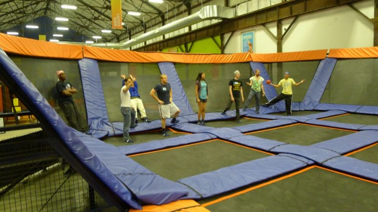
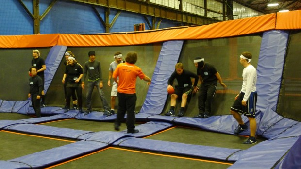
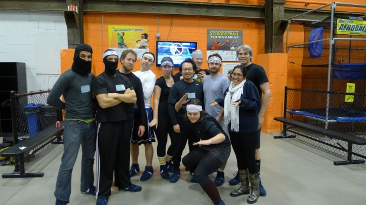

Dimagi just finished its first global All Hands Meeting. 2012 marked our fourth annual meeting, but it was the first that we broadcast globally. Using Google Hangout, we had about 20 team members join in Boston, 18 in India, 3 in South Africa, 2 in Mozambique, as well as individuals who are based in Guatemala and Benin. It was great to see everyone at the same time; and particularly stunning to see the rapid growth of our India office that went from 2 Dimagiers in 2010 to 5 in 2011, and now has a whopping 18 people.
Prep Work:
The management team (myself, our CTO, CSO, CMO, COO and our country directors) worked together to create a strategy deck that reviewed the past year. Then each Country Director and executive created slides on their goals for 2013 with “Open Questions” about their country of operations or areas of ownership. We put a significant amount of time into preparing this presentation over the two weeks leading up to the meeting. The management team had its own all-day meeting one week prior to the All Hands to run through the presentation, and ran a management-level discussion on the “Open Questions”. We then used this output to revise the strategy deck.
The Meeting:
We started the meeting by designating a 2-hour block to go through the strategy deck. Although I had spent hours creating the deck and had already presented it to our management team, I realized I was thinking quite differently about the presentation while going through it in front of a broader audience. Though it seems obvious in hindsight, my mind created many more connections to the strategies we were discussing as I imagined what everyone was thinking about as I talked.
After the presentation, the non-Boston team all signed-off (as it was evening for most of them) and the Boston team continued with team exercises. Every year, we brainstorm a list of exercises that builds off of exercises from the previous year plus one or two new ideas. We then have everyone vote for the 3 exercises they most want to do.
This year, the selected exercises were:
- Discussion questions from strategy deck (a.k.a. dot-voting for your favorite open questions)
- What would you do with an extra week of time?
- Three highs and lows from 2012
- New initiatives to lead (and who is doing them)
- ‘Failure hour’ discussing failures of the last year, lessons learned, and recommendations to avoid.
- Goal Modification from the Strategy Deck
- In 6 months, what might I be unhappy about that I am deciding to do or not do today (High risk decisions)?
And the exercises that were selected were:
- Discussion questions from strategy deck (a.k.a. dot-voting)
- What would you do with an extra week of time?
- Three highs and lows from 2012
- New initiatives to do/lead (and who is doing them)
Exercises 1 and 3 were repeat exercises from 2010 and 2011, and exercise 4 was a repeat from 2011. If we wanted to do a more accelerated meeting or skip the voting, we might have chosen to just select those.
Discussion questions from strategy deck (a.k.a. dot-voting)
In this exercise everyone select topics from the strategy deck that we wanted to discuss in greater detail. Between all the country directors and other management team members, we had over 50 open questions spanning impact, team satisfaction, profit, research, technology, and country strategies. We time-boxed each discussion to 15-20 minutes and the most popular questions to discuss were:
- What is the next product we should create/launch?
- How big do we want to get?
- What is our plan around custom reporting?
- Do we care about getting more turnkey paying clients?
- What is our strategy around branding?
- Anything we can do about the distribution of “bad work”?
What would you do with an extra week of time?
We’re all too busy to get to everything we wish we could. This exercise allows people to share what they would do with an extra week. Interestingly, nearly everyone selected something that was already part of their job. Most of the developers had items like, “Improve the UX of this area,” “build better analytics and stats for our monitoring tools,” or “Build this feature I know everyone would like but that we can’t find time to do.” Nearly everyone who wasn’t a dev was some variation of “go to the field and see our products in use.” My personal answer was to either run a CommCare training or write some code (which I haven’t done in 5 years aside from writing a Sikuli script last weekend).
Three highlights and lowlights from 2012
This is my favorite exercise of the meeting every year. It’s a great chance to commiserate in things that went poorly, as well as things that we all loved; and it’s eye-opening what people pick for both the highs and lows. We go around in a circle and give one low, then go back around and give one high, and then repeat until everyone has given their 3 highs and lows. Example of lowlights included having to give people bad work, technology issues, client blow-ups and safety issues for our staff. Some Highlights included travel, realizing work doesn’t have to suck, winning large projects like our USAID DIV2 award, massive improvements to our infrastructure and performance, and improving our recruiting. At times the lows can be intense, but I highly recommend this exercise as a fun and effective way to get a feel for what everyone loves and hates about their job.
New initiatives to do/lead (and who is doing them)
We start by yelling out new potential initiatives and capturing them on a whiteboard. We then individually get up and dot vote on initiatives we hope get created. Finally, we assign owners if people are willing to take it on. People voted for the below list and all had people nominate themselves as owners except one. Our track record of following through is so-so as not every initiative gets off the ground but enough do that it’s credible to think it’ll happen:
For Work:
- Make an analytics dashboard and put the big TV in the office to use.
- Make the interview process more fun
- Make field communication with devs less difficult / figure out a way to provide better access between field and dev
- Improve technical onboarding
- Engage the local software community more
- Stack exchange style Q&A site for CommCare (our main products) knowledge base
- Group code reviews / architectural discussions / technical brown bags
For Fun:
- Dimagi T-Shirts and Swag
- Book of the month (quarter/year) club
- Institute team competitions, e.g. sandwich-off
- Start a sports team and get in a league
- Group yoga
Evening
One of the highlights of the All Hands is that we then go do a group outing. In 2010, we did trapeze, 2011, it was paintball, and this year, we did trampoline dodgeball. Of course we couldn’t just play trampoline dodgeball like normal people: we picked team captains and teams ahead of time, decided our teams would be pirates vs. ninjas, talked trash for a week, and dressed appropriately for the event. A few words of caution for the reader: its way more tiring than you would think, getting hit in the face really hurts, and if you land on your back in-between the trampolines is actually not that soft (all of these tips are from my personal experience). There was talk of trying to challenge another local company to a competition of some sort for next year’s outing; please contact us if you are interested (as long as your local company is not a crossfit gym).





{kind=link}
{kind=link}
{kind=link}